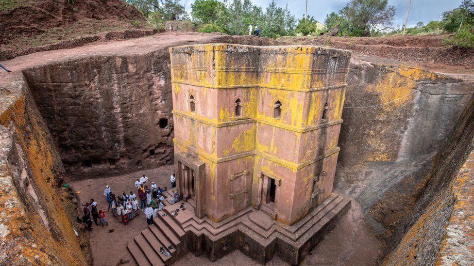
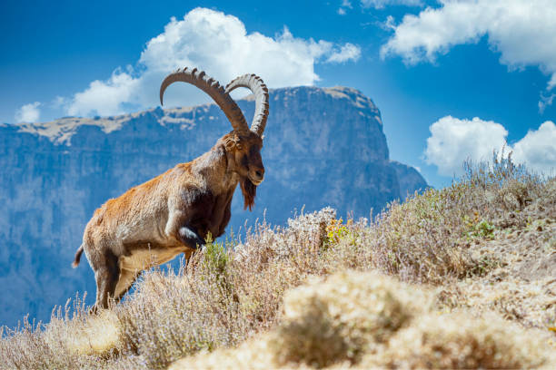
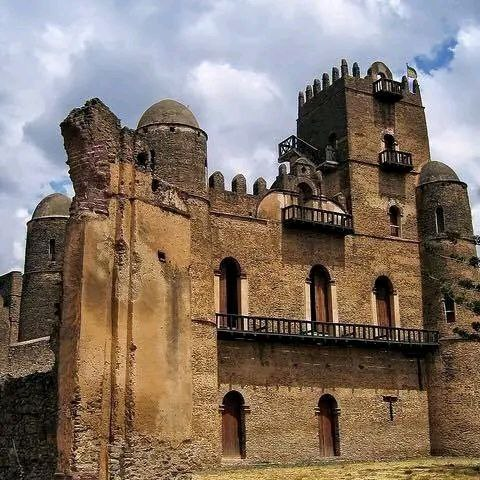

-
The Rock-Hewn Churches of Lalibela
Lalibela is a town in northern Ethiopia known for its rock-hewn churches, which were carved out of solid rock in the 12th and 13th century by King Lalibela of the Zagwe dynasty. These churches are considered some of the most remarkable examples of Ethiopian religious architecture and are a UNESCO World Heritage Site. The eleven rock-hewn churches in Lalibela are still in use today and are a popular pilgrimage site for Ethiopian Orthodox Christians. The most famous church is probably the Church of Saint George, which is believed to have been built in the 13th century and is carved out of a single rock, it is considered one of the most impressive examples of rock-hewn architecture in the world.
 -
Simien Mountains National Park
The Simien Mountains National Park, located in northern Ethiopia, is a UNESCO World Heritage Site known for its rugged landscapes, diverse wildlife, and stunning views. The park is home to the Simien Mountains, which are a part of the Ethiopian Highlands and reach heights of up to 4,543 meters (14,928 feet) at Ras Dashen, the highest peak in Ethiopia. The park is also home to several endangered species such as the Ethiopian wolf and the gelada monkey. The park offers various activities such as hiking, trekking, and wildlife viewing, it's also a great place to see the beautiful sunset and sunrise. The park is also a great destination for those interested in culture and history, with ancient villages and traditional way of life of the local people.
 -
Aksum
Axum is an ancient city located in the Tigray region of northern Ethiopia. It is considered one of the most important historical and cultural sites in Ethiopia, and is known for its ancient stelae, or obelisks, which are considered some of the most significant examples of Ethiopian art and architecture. The stelae are believed to have been erected in the 4th century AD and are some of the tallest monolithic statues in the world. Axum was once the capital of the powerful Aksumite Empire, which controlled trade routes across the Red Sea and played a significant role in the history of the region. The city is also considered the holiest city in Ethiopia, and it is believed to be the home of the Ark of the Covenant. The city is also home to several ancient churches, including the Church of St. Mary of Zion, which is considered the most important church in Ethiopia.

-
The Blue Nile Falls
The Blue Nile Falls, also known as Tis Abay in Ethiopia, is a waterfall located on the Blue Nile River, which is one of the main tributaries of the Nile River. The waterfall is located in the Amhara region of northern Ethiopia, about 30 km downstream from the city of Bahir Dar. The Blue Nile Falls is one of the most spectacular and beautiful waterfalls in Ethiopia, known for its powerful and consistent flow of water. The waterfall is also considered a sacred site by many Ethiopians. The Blue Nile Falls is a great place to see the beautiful landscape and to enjoy the natural beauty of the Blue Nile River. Visitors can take a boat trip to the base of the waterfall, where they can see the powerful water cascading down the steep cliffs. The waterfall is also a great place to see the beautiful sunset and sunrise. The waterfall is also a great destination for those interested in hiking and bird watching

-
Gondar
Gonder is a city located in the Amhara region of northern Ethiopia, it is known for its historical and cultural significance and is sometimes referred to as the "Camelot of Africa." The city is known for its well-preserved 17th and 18th century castles and palaces, which were built during the reign of the Ethiopian emperors of the Zemene Mesafint period. These castles and palaces are considered some of the most significant examples of Ethiopian architecture and are a UNESCO World Heritage site. The most famous buildings in Gonder are the Royal Enclosure, which includes the palace of Emperor Fasiladas, the bath of Fasiladas, and a number of other buildings, and the Debre Berhan Selassie Church, which is known for its beautiful murals. The city is also known for its colorful markets and traditional crafts, such as weaving and pottery.
 -
Danakil Depression
The Danakil Depression is a desert landscape located in the Afar region of northeastern Ethiopia. It is considered one of the lowest and hottest places on Earth and is known for its unique geological features, including salt mines, volcanic activity, and hot springs. The depression is also home to several active volcanoes, such as Erta Ale, and is considered one of the most active volcanic regions in the world. The Danakil Depression is also home to several different ethnic groups, including the Afar people, who have traditionally made a living by mining salt and trading it with other regions. The depression is also known for its unique and otherworldly landscapes, including colorful mineral deposits, salt flats, and acid ponds.

-
Harar Jugol
Harar Jugol is a fortified historical city located in eastern Ethiopia. It is considered one of the most important Islamic cultural sites in Africa and is a UNESCO World Heritage Site. The city was founded in the 7th century and was a major center of Islamic culture and learning in the medieval period. The city is known for its many mosques, shrines, and traditional houses, many of which date back to the 16th century. The city's walls, which were built in the 16th century, are still standing and are considered one of the best-preserved examples of medieval fortifications in Africa. The city is also known for its colorful markets and traditional crafts, including basket-weaving and pottery. The city is also famous for its hyenas, which are fed by the local residents in the evening. Harar Jugol is a great destination for those interested in history, culture, and architecture, and for those who want to experience traditional way of life

-
Lake Tana Monasteries
Lake Tana is the largest lake in Ethiopia and is located in the northwest of the country. It is known for its monasteries, which are situated on several islands in the lake. The monasteries are considered some of the most important religious sites in Ethiopia and are an important pilgrimage destination for Ethiopian Orthodox Christians. The monasteries date back to the 14th century and are known for their unique architectural style and ancient religious artifacts. The monasteries are also known for their beautiful murals and illuminated manuscripts. The monasteries are also home to several important religious relics, including the Ark of the Covenant, which is believed to have been brought to Ethiopia by Menelik I, the son of King Solomon and Queen Sheba. Visiting the monasteries requires taking a boat ride across the lake and the monasteries can only be visited with a guide. The monasteries are a great destination for those interested in history, culture, and religion.
-
Erta Ale Volcano
Erta Ale is an active volcano located in the Afar region of northeastern Ethiopia. It is considered one of the most active volcanoes in the world and is known for its persistent lava lake. The volcano has a height of 613 meters (2,011 feet) and is situated in the Danakil Depression, one of the lowest and hottest places on Earth. The volcano is also considered as one of the most accessible lava lakes in the world. Erta Ale is a shield volcano, which means that it is a broad volcano that is formed by the accumulation of fluid lava flows. The volcano is a popular destination for hikers, adventure travelers, and scientists who come to see the active volcano and its lava lake. Climbing Erta Ale requires a permit and should only be attempted with a guide due to the harsh conditions and the potential danger of the volcano.

-
Omo Valley
The Omo Valley is a region in southern Ethiopia known for its diverse cultures and traditional way of life. The valley is home to several different ethnic groups, each with their own distinct customs, languages, and ways of life. The Omo Valley is particularly famous for its remote and isolated tribes, such as the Mursi, Surma, and Hamer tribes. These tribes are known for their unique customs and traditions, including body painting, scarification, and lip plates worn by the women. The Omo valley is also a great place to see the beautiful landscapes and wildlife, with the Omo River flowing through the valley and the Mago and Omo National Parks located nearby. The valley is also an important archaeological site, with several ancient hominin fossils found in the area, including the famous Lucy, Australopithecus afarensis. The Omo valley is an ideal destination for those interested in culture, history, and anthropology, as well as for nature lovers and photographers.